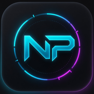

10 ноября стартует Warhammer Survivors — близнец Vampire Survivors во вселенной «вахи»
Одобренная авторами Vampire Survivors из poncle, Warhammer Survivors получила дату релиза — 10 ноября. Игры жанра «пулевой рай» достаточно аддиктивные, и, возможно, поэтому команда Auroch Digital не побоялась конкуренции с…